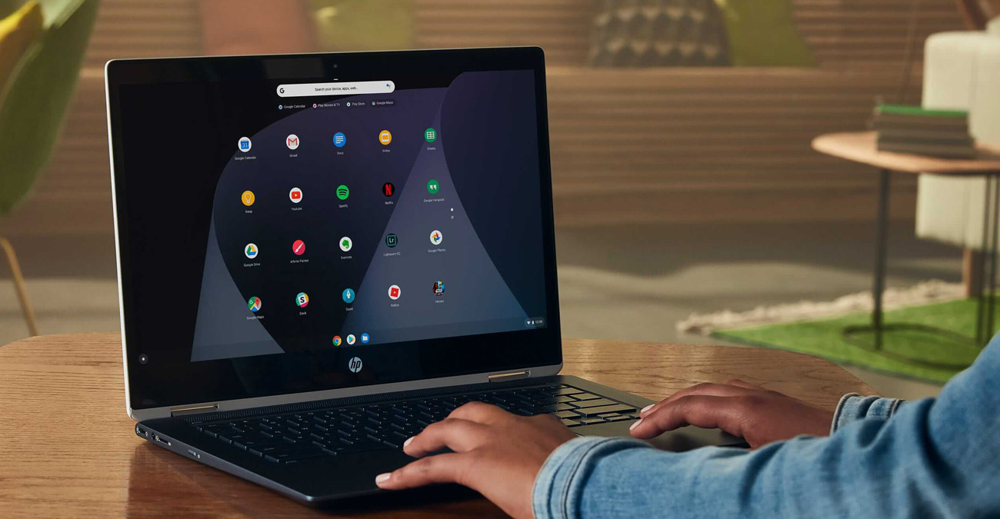

O que é o Chrome OS?
O Chrome OS é um sistema operacional criado pelo Google, lançado oficialmente em 2011, focado em agilidade, segurança e simplicidade. Ele é construído sobre o núcleo do Linux e baseado principalmente no navegador Chrome como sua principal interface de usuário.
Inicialmente pensado para ser totalmente dependente da nuvem, o Chrome OS evoluiu para suportar aplicações Android, programas Linux, além de ter funcionalidade offline aprimorada, tornando-se uma solução flexível para usuários modernos.
Características Principais
- Inicialização Rápida: O Chrome OS é otimizado para iniciar em poucos segundos, permitindo que o usuário comece a trabalhar quase instantaneamente.
- Atualizações Automáticas: As atualizações do sistema ocorrem de maneira silenciosa em segundo plano, sem interromper o uso, garantindo sempre o melhor desempenho e segurança.
- Alta Segurança: O sistema utiliza múltiplas camadas de proteção, como sandboxing, verificação de inicialização (Verified Boot), e criptografia automática de dados.
- Integração com o Google: Sincroniza automaticamente com o Google Drive, Google Docs, Gmail, Google Meet, YouTube e outros serviços essenciais para produtividade e entretenimento.
- Interface Simples e Intuitiva: Foco em usabilidade, com barra de tarefas semelhante a um "Dock" e janelas gerenciadas de forma eficiente.
Dispositivos com Chrome OS
Dispositivos que utilizam o Chrome OS são chamados de Chromebooks, mas também existem Chromeboxes (mini PCs) e Chromebases (computadores all-in-one).
Esses dispositivos são conhecidos por:
- Preço Acessível: Opções de entrada bastante econômicas, perfeitas para estudantes e usuários casuais.
- Design Leve e Portátil: Ideal para quem precisa de mobilidade e longa duração de bateria (muitos modelos oferecem 10+ horas de uso).
- Suporte para Aplicativos Android: A Google Play Store permite baixar e usar milhões de apps Android.
- Compatibilidade com Linux: Ideal para desenvolvedores e usuários avançados que precisam de terminal e programas Linux.
Benefícios do Chrome OS
- Leveza e Agilidade: Sistema ideal para hardware modesto, proporcionando ótimo desempenho sem exigir muita memória RAM ou processamento avançado.
- Produtividade em Qualquer Lugar: Com suporte a Google Docs, Sheets, Slides, e apps Android e Linux, o usuário tem ferramentas completas de produtividade.
- Fácil Gerenciamento: Utilizado amplamente por escolas e empresas, permite gerenciamento centralizado de dispositivos (via Google Admin Console).
- Modo Offline: Possibilidade de editar documentos, planilhas, e-mails e acessar arquivos locais mesmo sem conexão com a internet.
- Atualizações de Longo Prazo (LTS): Muitos dispositivos recebem suporte de atualizações por mais de 8 anos.
- Sustentabilidade: Muitos Chromebooks são fabricados com materiais recicláveis e possuem certificações de eficiência energética.